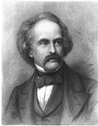

Kırmızı Leke (1850), on dokuzuncu yüzyıl Amerikan romancısı ve kısa hikâye yazarı Nathaniel Hawthorne’un (1804-1864) en iyi bilinen eseridir. Hawthorne’un yazılarının çoğu gibi, Yeni İngiltere sömürgesi bağlamında sosyal ve ahlâkî soruları ele alır. Sembolizmin yaygın kullanımı, onu alegorik edebiyatın mükemmel bir örneği haline getirmiştir.

Kırmızı Leke’nin kadın kahramanı, 1600’lerde Boston’un Püriten kasabasında yaşayan genç bir kadın olan Hester Prynne’dir. İngiltere’de kendisinden yaşça büyük bir adamla evlenmesine rağmen, söz verdiği şekilde onun arkasından Yeni Dünya’ya gelmemiştir ve yolculuğu sırasında eşinin gemisinin kaybolduğunu varsayar. Boston’da Hester, bir zina ilişkisi sonucunda hamile kalır ve Pearl adında bir kız çocuğu doğurur.
Hester, katı Püriten kasabası önderlerinden gelen yoğun baskıya rağmen, çocuğun babasının adını söylemeyi reddeder. Sonunda onu toplum dışına iterler ve zinasının utanç verici bir sembolünü (bir parça altın renkli kumaş üzerine görünür şekilde işlenmiş A şeklinde kırmızı bir leke) takması için onu zorlarlar. Katlandığı korkunç sosyal soyutlanma ve zorluklara rağmen Hester, Pearl’ü severek büyütür, hiçbir zaman ümitsizliğe düşmez ve topluluğun geri kalanına karşı hiçbir kızgınlık taşımaz. Sonunda durum, hem Hester’ın halen yaşayan eşi ile çocuğunun babasının kimlikleri bir bir açığa çıktıkça zirveye ulaşır.
Massachusetts, Salem’in orijinal Püriten ailelerinin birinin bir torunu olan Hawthorne, Püritenler’in katı yaşam şekillerinin ve hoşgörüsüz ahlâk kurallarının iyilikten çok, çoğunlukla zarar vermeye hizmet ettiklerinin farkındadır. 1692’de adı kötüye çıkmış olan Salem cadı mahkemelerinde yaklaşık yirmi kişiyi ölüme mahkûm eden yargıçlardan biri olan John Hathorne, doğrudan ataları arasındadır. Kırmızı Leke boyunca Hawthorne, Hester’ın inceliği ve özverisi ile Püriten liderlerin katı ciddiyeti arasında bir zıtlık kurar.
Kırmızı Leke yoğun şekilde sembolik ve alegoriktir. Öğrencilerine edebî analize bir başlangıç yaptırmak isteyen İngilizce öğretmenleri arasında romanı popülerleştiren bu sembolizmin çoğu alenîdir ve kolayca anlaşılabilir. Hawthorne, suçluluk duygusuyla dolu vaiz Arthur Dimmesdale ve gizemli yaşlı doktor Roger Chillingworth gibi karakterlerinin adı yoluyla hikâyeye anlam ve atmosfer eklemede hüner sahibiydi. Ve kırmızı lekenin kendisi, başlangıçta Hester’ın utancının ve yabancılaşmasının bir işareti ama sonunda gücünün ve tutarlılığının bir mührü olması anlamında romanın en karmaşık sembolü olarak görünür.
EK BİLGİLER:
1. Hawthorne, Nathaniel Hathorne adıyla doğdu ama yazılarını ilk kez yayınlamaya başladığında adına “a” ve “w” harflerini ekledi.
2. Bowdoin Koleji’nde Hawthorne’nın en yakın arkadaşlarından biri, sonrasında on dördüncü ABD başkanı olan Franklin Pierce’dı.